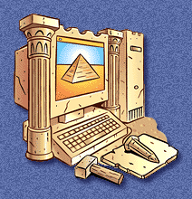

|
What if the Web had existed since ancient times? |
 |
||
| Ancient Times | Middle Ages | Modern Times |
| Use our special feature to dip into imaginary news sites from Ancient Times, The Middle Ages, or Modern Times. Then, link to dozens of e-zines, want ads, bookstores, and other types of simulated Web sites, written from the perspective of the time. Each site presents real history, mixed with imagination. |
| Click on for a current perspective. | |